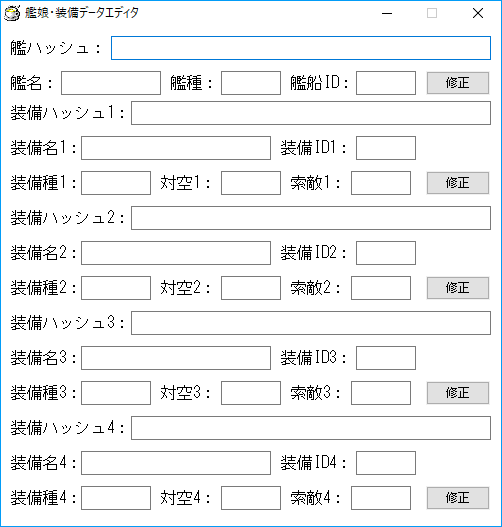

data_editor.exeを起動しますと、次のようなウィンドウが出現します。
 実はこのソフトでは、艦娘については「ID」「名前」「ハッシュ」の3データが、
装備についてはそれに加え「種類」「対空値」「索敵値」が登録されています。
kmms_data.csvとwpn_data.csvを読めば項目の意味がお分かりいただけるかと思いますが、
各データを手作業で編集するのは意外に面倒なものです。
そこで、まず「認識できない艦娘 or 装備」が写っている、改装画面画像(800x480・png形式)をウィンドウに
ドラッグ＆ドロップします。すると、改装画面と判定できた場合に限り、次のように判定結果が表示されます。
艦名が認識できなければ、もちろん艦名は空になります(装備名も同様)。
また、艦船IDや装備IDも分かりませんので、画像のように「-1」と表示されます。
そこで、各項目をちまちまと埋めていきます。
(装備ID＝図鑑番号ですが、艦船ID≠図鑑番号です。どうやって決めているかって？砂井裏鍵さんなどに聞いてください)
ここで「艦ハッシュ」や「装備ハッシュ」の言葉の意味ですが、ざっくり言えば
「画像の一部を読み取って二値化し、黒＝b、白＝wとしたもの」となります。
艦ハッシュで128文字、装備ハッシュで108文字です。
また、装備種は、wpn_data.csvを眺めながら付けることを推奨します。
編集後は「修正」ボタンを押せば、それぞれ艦娘・装備の情報が追加/更新されます。
(艦船IDや装備IDが、それぞれkmms_data.csvやwpn_data.csvに載っているものなら「更新」、そうでないなら「追加」する挙動を見せます)
ちなみに追加/修正した結果は、「おりこうさんな秘書」を再起動しないと反映されません。